GUARDIÕES DO REINO DOS TALENTOS
17 talentos. 17 caminhos. Um único reino.
Grimório Oficial de Sabedoria & Alinhamento
17 talentos. 17 caminhos. Um único reino.
Muito antes dos guardiões se conhecerem, o Reino dos Talentos era um lugar próspero, sustentado por uma fonte mágica conhecida como A Chama da Contribuição.
Essa chama tinha uma característica curiosa: ela não podia ser alimentada por uma única pessoa.
Por mais poderoso que fosse um guardião, nenhum possuía sozinho todas as habilidades necessárias para manter o reino vivo.
A Chama dependía de algo maior: a complementaridade.
Durante séculos, os habitantes do reino acreditaram que o segredo da grandeza estava em desenvolver talentos iguais. Queriam mais estrategistas, mais comunicadores, mais realizadores.
Mas quanto mais semelhantes se tornavam, mais frágil o reino ficava.
Foi então que os antigos sábios descobriram uma verdade esquecida:
Foi nesse momento que nasceram os 17 Guardiões do Reino dos Talentos.
Os guardiões estão divididos em quatro grandes ordens que sustentam o equilíbrio do reino:
 Ordem da Execução & Lealdade
Ordem da Execução & LealdadeTítulo: A Guardiã dos Compromissos
Guilda / Ordem: Ordem da Execução & Lealdade
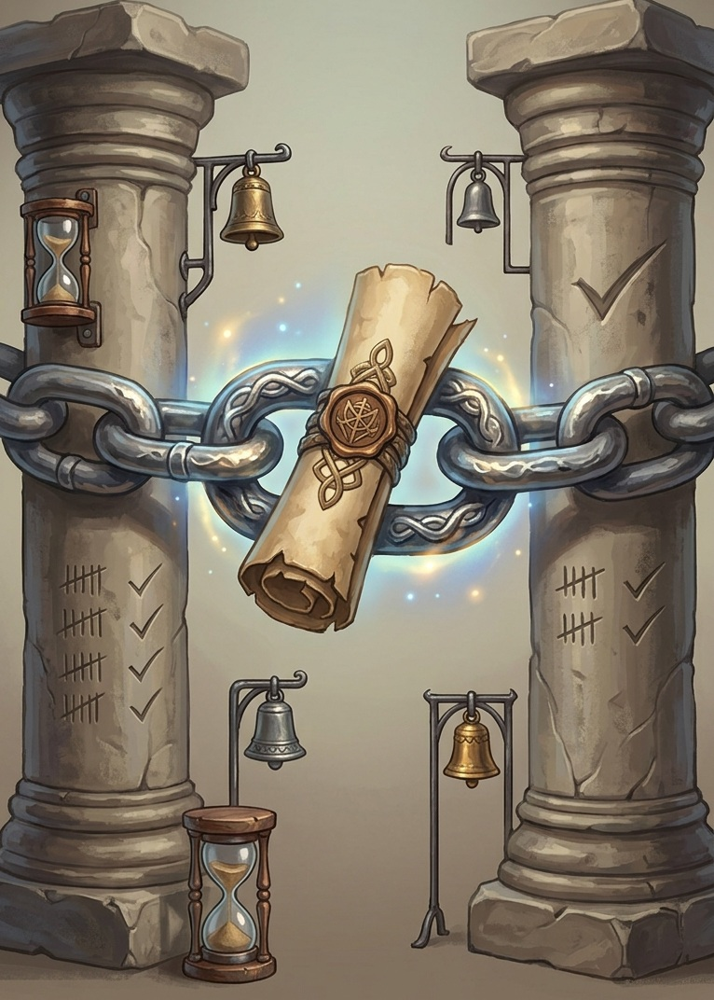
Dom Principal & Especialidade: Acompanhamento, responsabilidade e confiabilidade
Título: O Executor Veloz
Guilda / Ordem: Ordem da Execução & Lealdade
Dom Principal & Especialidade: Transforma ideias em ação e entrega
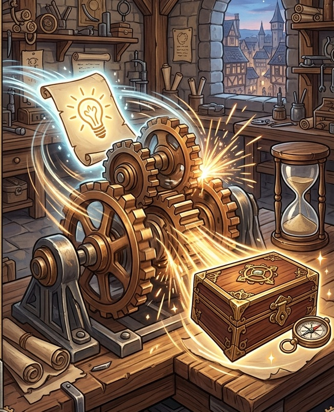
Título: A Cultivadora de Potenciais
Guilda / Ordem: Ordem do Pertencimento & Propósito
Dom Principal & Especialidade: Identifica potencial, crescimento e necessidades humanas
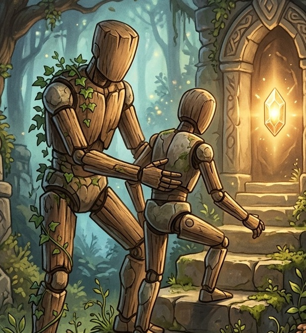
Título: A Guardiã dos Valores
Guilda / Ordem: Ordem do Pertencimento & Propósito
Dom Principal & Especialidade: Significado, propósito e coerência
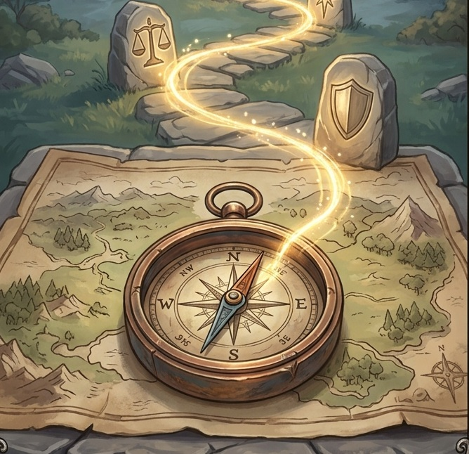
Título: A Estrategista dos Caminhos
Guilda / Ordem: Guilda da Visão & Futuro
Dom Principal & Especialidade: Caminhos alternativos e visão de cenário
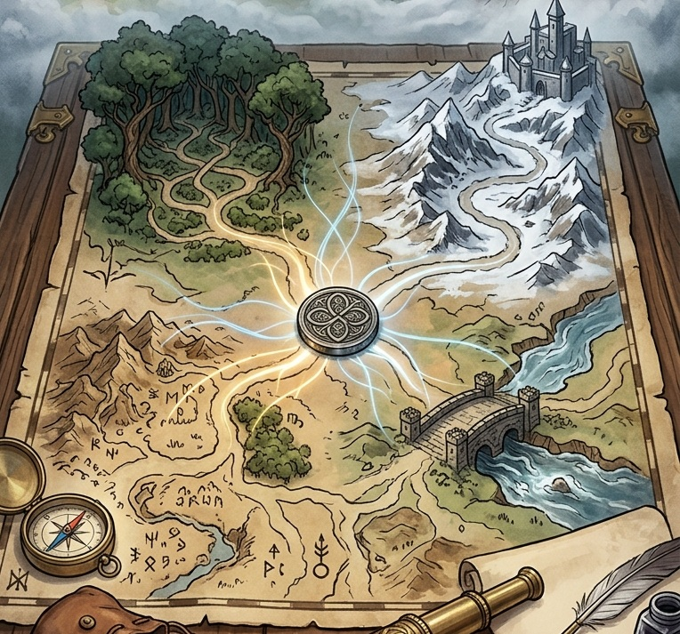
Título: A Camaleã dos Mares
Guilda / Ordem: Ordem da Execução & Lealdade
Dom Principal & Especialidade: Flexibilidade e resposta rápida
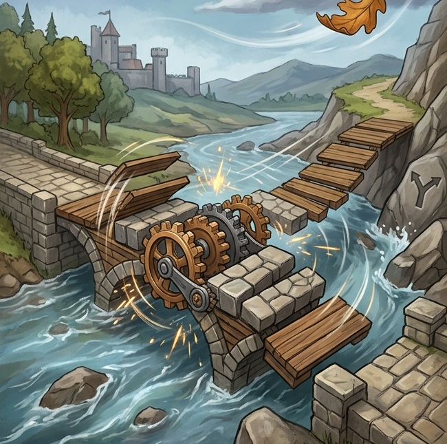
Título: O Arquiteto de Laços
Guilda / Ordem: Ordem do Pertencimento & Propósito
Dom Principal & Especialidade: Relacionamentos autênticos e cooperação
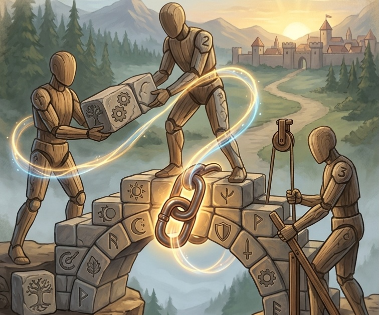
Título: A Restauradora de Crises
Guilda / Ordem: Guilda da Análise & Soluções
Dom Principal & Especialidade: Restauração e solução de crises
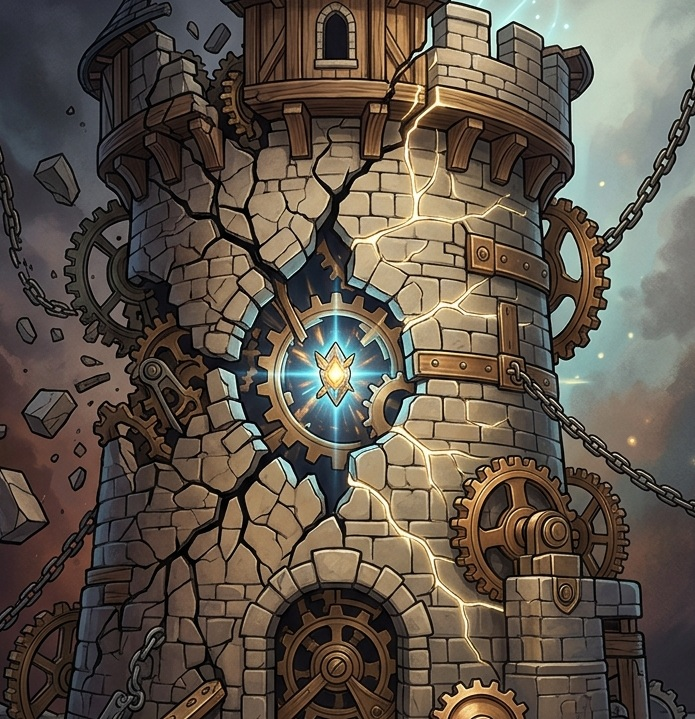
Título: O Guardião da Memória
Guilda / Ordem: Guilda da Análise & Soluções
Dom Principal & Especialidade: Contexto e memória institucional
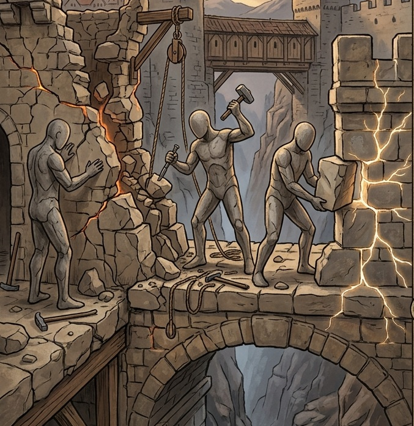
Título: A Mentora de Talentos
Guilda / Ordem: Ordem do Pertencimento & Propósito
Dom Principal & Especialidade: Mentoria e aprendizagem
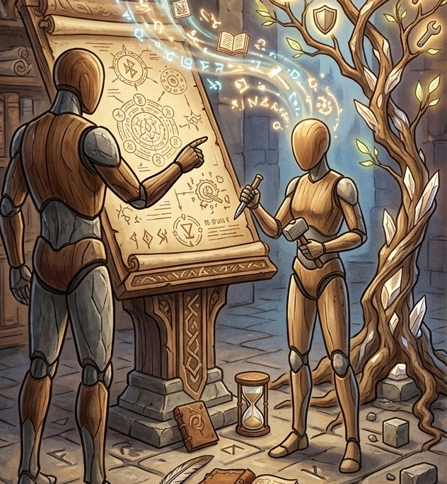
Título: A Mestra da Lógica
Guilda / Ordem: Guilda da Análise & Soluções
Dom Principal & Especialidade: Objetividade, lógica e diagnóstico
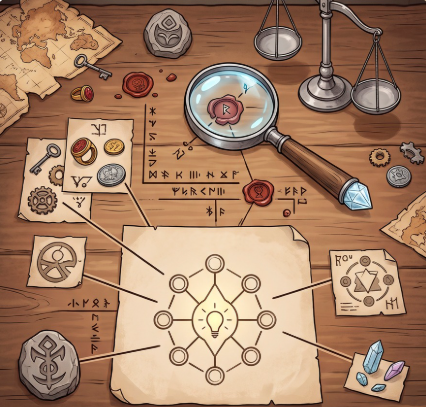
Título: A Guardiã do Círculo
Guilda / Ordem: Ordem do Pertencimento & Propósito
Dom Principal & Especialidade: Pertencimento e participação
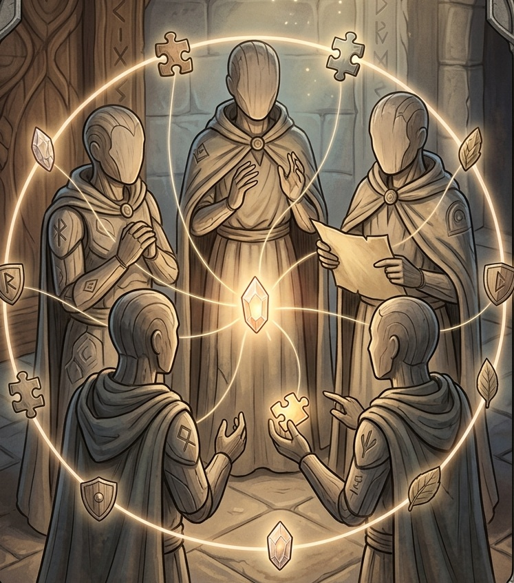
Título: A Faro da Esperança
Guilda / Ordem: Ordem do Pertencimento & Propósito
Dom Principal & Especialidade: Motivação, entusiasmo e esperança
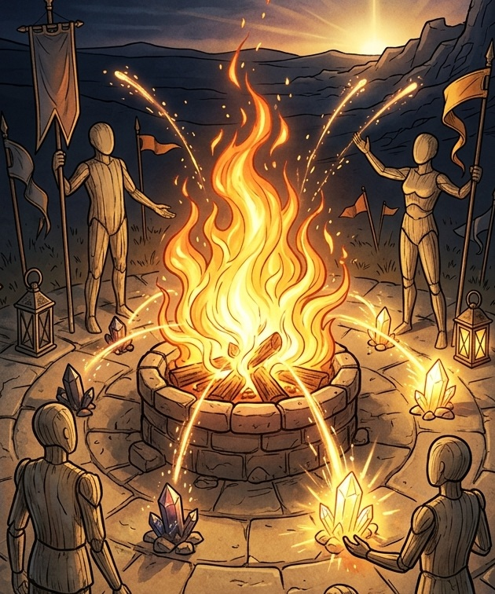
Título: A Escudeira da Prudência
Guilda / Ordem: Guilda da Análise & Soluções
Dom Principal & Especialidade: Prudência e antecipação de obstáculos
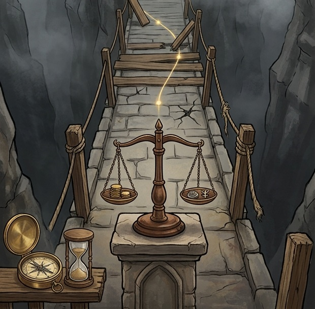
Título: O Sábio Pesquisador
Guilda / Ordem: Guilda da Análise & Soluções
Dom Principal & Especialidade: Pesquisa, reflexão e estudo
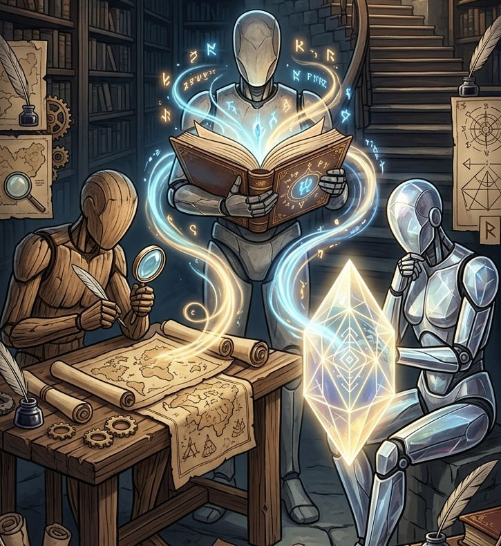
Título: A Ativadora da Ação
Guilda / Ordem: Ordem da Execução & Lealdade
Dom Principal & Especialidade: Transforma intenção em movimento, cria energia para começar e impulsiona a execução
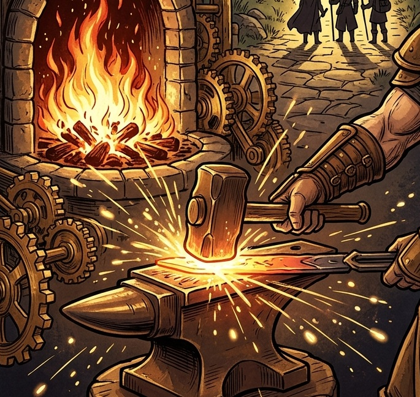
Título: A Bússola do Reino
Guilda / Ordem: Guilda da Visão & Futuro
Dom Principal & Especialidade: Foco, direção e clareza
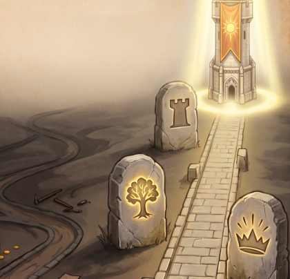
| Situação | Guardião | Especialidade |
|---|---|---|
| Garantir compromissos | Bruna | Acompanhamento, responsabilidade e confiabilidade |
| Pensar estrategicamente | Katia | Caminhos alternativos e visão de cenário |
| Sair da paralisia | Silvia | Transforma intenção em movimento |
| Executar rapidamente | Fábio | Transforma ideias em ação e entrega |
| Conectar propósito e valores | Jocastra | Significado, propósito e coerência |
| Adaptar-se a mudanças | Lilian | Flexibilidade e resposta rápida |
| Construir confiança | Lucas | Relacionamentos autênticos e cooperação |
| Resolver problemas difíceis | Luciane | Restauração e solução de crises |
| Aprender com experiências | Marcelo | Contexto e memória institucional |
| Situação | Guardião | Especialidade |
|---|---|---|
| Desenvolver competências | Marinete | Mentoria e aprendizagem |
| Analisar fatos e evidências | Pandora | Objetividade, lógica e diagnóstico |
| Garantir inclusão | Patrícia Menis | Pertencimento e participação |
| Reenergizar o grupo | Patrícia Spadaccini | Motivação, entusiasmo e esperança |
| Avaliar riscos | Renata | Prudência e antecipação de obstáculos |
| Aprofundar conhecimentos | Roberto | Pesquisa, reflexão e estudo |
| Definir prioridades | Thomas | Foco, direção e clareza |
| Desenvolver pessoas | Gabriela | Identifica potencial e necessidades |
Durante esta jornada você descobriu talentos.
Descobriu poderes.
Descobriu limitações.
Descobriu guardiões que enxergam aquilo que você não vê.
Guardando este livro, leve consigo uma última reflexão: